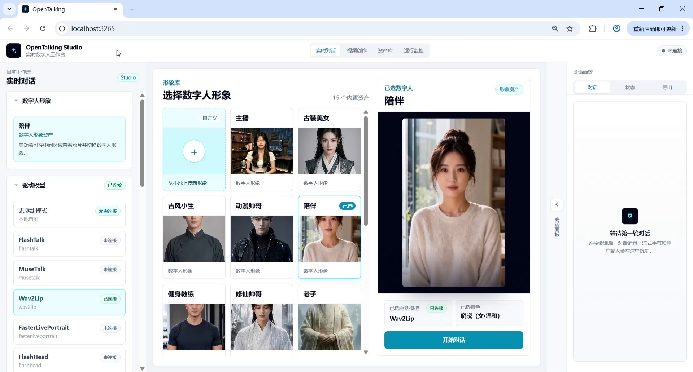
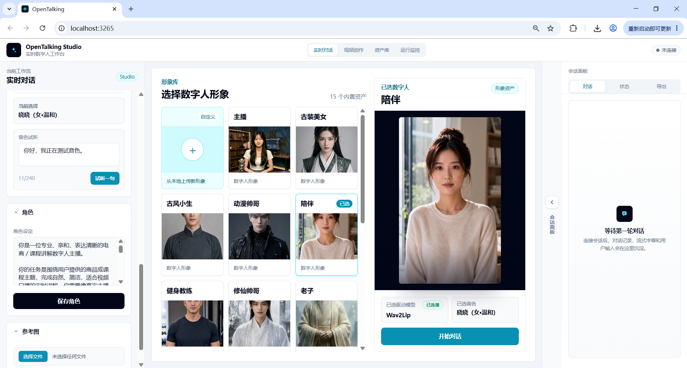

Emotional Comfort and Real-Time Companion¶
Real-Time Companion Role Scenario: Daytime Companionship, Multi-Turn Dialogue, and Emotional Comfort¶
Tutorial Goal: Demonstrate how to build a real-time companion role demo in OpenTalking Studio: enter the real-time conversation workflow, set up a companion persona, select a companion-type digital avatar, connect the Wav2Lip driving model, and generate digital human content suitable for daytime companionship, emotional comfort, lightweight advice, and natural conversation closure through multi-turn real-time Q&A.
1. Case Overview¶
| Item | Description |
|---|---|
| Case Name | OpenTalking Real-Time Companion Role End-to-End Case |
| Demo Role | Daytime companion digital human |
| Core Capabilities | Real-time dialogue, persona constraints, emotion understanding, natural responses, multi-turn memory, lightweight advice, Wav2Lip lip-sync driving |
| Use Cases | AI companion assistant, emotional companionship, daily chat, study/work break companionship, bedtime companionship, lightweight life advice, etc. |
2. Prerequisites¶
- Launch OpenTalking Studio and open the browser page. The example uses
localhost; the actual port depends on the startup log. - Prepare a companion-type digital human avatar. The video uses the "Companion" character.
- Prepare a companion role persona to define the digital human's identity, tone, and response boundaries.
- Confirm the driving model is available. The video uses Wav2Lip, with status showing "Connected".
- Prepare a set of daytime companion scenario questions to verify the digital human can maintain continuous natural dialogue.
3. Detailed Steps¶
Step 1: Enter the "Real-Time Conversation" Workflow and View the Initial Avatar¶
After opening OpenTalking Studio, select "Real-Time Conversation" at the top. The left panel shows the current workflow, digital human avatar, voice, role, and driving model status; the middle area is for selecting digital human avatars; the right side is the conversation panel.
The video intro displays the avatar library and the currently selected digital human, serving as an entry screenshot for the real-time companion demo.

Screenshot 1: Enter the real-time conversation workflow and view the initial avatar.
Step 2: Set Up the Persona¶
In the left "Role" area, fill in the role settings and click "Save Role". The persona defines the digital human's identity, speaking style, response length, and safety boundaries, preventing inconsistent character style across multi-turn conversations.
The screenshot shows the role settings entry. For a companion role, replace the text with the following:
You are a gentle, quiet, and reliable daytime companion digital human.
Your task is to engage in natural, brief, and comforting real-time conversations when users need a break from work, study, are feeling down, or need simple advice. Like a dependable friend, you should first acknowledge the user's emotions, then offer small, actionable suggestions they can do right now.
Speaking style: Warm, natural, and brief. Don't sound like customer service, a psychology report, or a lecture. Avoid empty motivational platitudes. Keep each response within 50-80 words, suitable for digital human voice-over.
Dialogue requirements: Maintain context awareness, remember states like fatigue, loneliness, or decreased efficiency mentioned by the user, and naturally incorporate them in subsequent responses. Ask at most one question per turn.
Safety boundaries: You can provide emotional companionship and lightweight advice, but do not claim to be a professional therapist. If the user expresses serious self-harm or harm to others, suggest they immediately contact a trusted person or local emergency services.

Screenshot 2: Fill in and save the persona in the role area.
Step 3: Select a Digital Human Avatar Suitable for Companion Scenarios¶
After saving the persona, select a suitable digital human from the avatar library. For companion scenarios, choose avatars with front-facing composition, gentle expression, unobstructed mouth, and clean background. The video ultimately selects the "Companion" character, whose overall style is more suitable for daily companionship, emotional comfort, and light chat.
When selecting, check the following:
- Is the face centered?
- Is the mouth area clear?
- Is the expression natural and gentle?
- Is the background clean and non-distracting?
- Is it suitable for lip-sync models like Wav2Lip?
Screenshot 3: Select a digital human avatar suitable for companion scenarios.
Step 4: Confirm the Driving Model and Start the Conversation¶
In the left "Driving Model" area, select Wav2Lip and confirm the status is "Connected". Click "Start Conversation" and wait for the WebRTC stage to connect. Once connected, a text input box, microphone button, and send button will appear at the bottom.
Screenshot 4: Confirm the driving model and start the conversation.
Step 5: Enter the First Daytime Fatigue Companion Question¶
The first question verifies whether the digital human can recognize daytime states like "busy, fatigued, decreased efficiency" and provide a natural, brief companion response.
Example question:
Hi, I've been busy all morning, my head feels a bit fuzzy, and my productivity is dropping. What should I do?
Expected result: The digital human should first acknowledge the user's fatigue, then offer a lightweight, actionable suggestion rather than launching into a long lecture.
Screenshot 5: Enter the first daytime fatigue question.
Step 6: Verify Emotional Comfort and Lightweight Advice¶
The second turn enters emotional support. In the video, the digital human offers suggestions like "take a deep breath, close your eyes for 30 seconds, drink some water, write down the most urgent task" — a typical lightweight companion-style response.
Example question:
I'm not feeling great today. It's not like I have too much to do, but I just can't seem to get motivated.
Expected result: The response should not sound like customer service or a psychology report, but like a warm, reliable friend — first empathizing, then offering one small step.
Screenshot 6: Verify emotional comfort and lightweight advice.
Step 7: Add a Loneliness Companion Scenario¶
To make the demo more realistic, include expressions like "sitting alone," "at a cafe," or "suddenly feeling a bit lonely" to verify the digital human can respond to loneliness naturally rather than mechanically.
Example question:
I'm sitting alone in a cafe right now. It's pretty quiet around me, but I suddenly feel a bit lonely.
Expected result: The digital human should naturally respond to the loneliness emotion with a gentle tone, without over-probing, while maintaining a sense of companionship.
Screenshot 7: Add a loneliness companion scenario.
Step 8: Enter a "Simple Action Right Now" Advice Question¶
This turn verifies whether the digital human can transition from emotional companionship to life advice. The question should explicitly request something "simple and doable right now" to constrain the response length and keep it suitable for digital human voice-over.
Example question:
I want to feel a bit better for the rest of the day. Can you give me one very simple suggestion I can do right now?
Expected result: The digital human outputs a short suggestion, such as standing up to stretch, feeling the sunlight, drinking water, or tidying the desk — avoiding too many tasks at once.
Screenshot 8: Enter a "simple action right now" advice question.
Step 9: Verify Multi-Turn Memory and Context Continuity¶
After several turns, ask the digital human to make a judgment based on the previously mentioned fatigue, loneliness, and lack of motivation. This step verifies whether it can maintain context rather than only responding to the current message.
Example question:
Expected result: The digital human should reference the earlier context and suggest a short break or lightweight adjustment before returning to tasks, demonstrating multi-turn memory and companion logic.
Screenshot 9: Verify multi-turn memory and context continuity.
Step 10: Daytime Companion Closing, Switch to a Softer Tone¶
Finally, ask the digital human to close with a lighter, slower tone, verifying whether it can transition from advice-style responses to a companion-style summary.
Example question:
Can you end with a lighter tone and help me get back into today's rhythm? No motivational cliches — just talk to me like a friend.
Expected result: The digital human should reduce information density, use short sentences for a gentle closing, suitable for the demo's ending.
Screenshot 10: Daytime companion closing, switch to a softer tone.
Step 11: Complete the Real-Time Companion Role Demo Summary¶
The video concludes by summarizing the demo's core capabilities: real-time companionship, natural dialogue, multi-turn memory, lightweight advice, and stable persona performance. This frame serves as the final result page, demonstrating that OpenTalking goes beyond digital human broadcasting — it can build truly usable companion AI digital human applications.
Screenshot 11: Complete the real-time companion role demo summary.
4. Workflow Summary¶
Enter "Real-Time Conversation" workflow, view initial avatar
→ Set up persona
→ Select digital human avatar suitable for companion scenarios
→ Confirm driving model and start conversation
→ Enter first daytime fatigue companion question
→ Verify emotional comfort and lightweight advice
→ Add loneliness companion scenario
→ Enter "simple action right now" advice question
→ Verify multi-turn memory and context continuity
→ Daytime companion closing, switch to a softer tone
→ Complete real-time companion role demo summary
5. Common Issues and Optimization Tips¶
1. Responses Too Long for Digital Human Voice-Over¶
Add constraints in the question, such as:
Please answer in three sentences
Keep it under 50 words
Suitable for short video voice-over
Don't lecture
2. Responses Sound Like Customer Service, Not a Companion¶
Add constraints in the persona:
You are a gentle, quiet, and reliable companion digital human. Empathize first, then give small advice. Don't sound like customer service, and don't keep asking follow-up questions.
3. Multi-Turn Dialogue Goes Off Track¶
Re-constrain the role every few turns with a single sentence, such as:
4. Lip-Sync Effect Is Unstable¶
Prioritize digital human avatars with front-facing, clear, unobstructed faces and even lighting around the mouth area; avoid side profiles, hand-covered faces, and excessive facial expressions.
5. Video Recording Not Clear Enough¶
Use landscape recording, keep browser zoom at 100%, and avoid frequent window switching.
6. Recommended Closing Voice-Over¶
This concludes the OpenTalking real-time companion role end-to-end case. This demo showcases the complete flow from persona setup, avatar selection, and driving model connection to real-time Q&A, emotional comfort, multi-turn memory, and lightweight advice generation. OpenTalking doesn't just make digital humans "move" — it aims to connect persona settings, voice driving, lip-sync, and real companion scenarios into a reproducible content production pipeline, bringing digital humans from tech demos to genuinely useful AI applications.